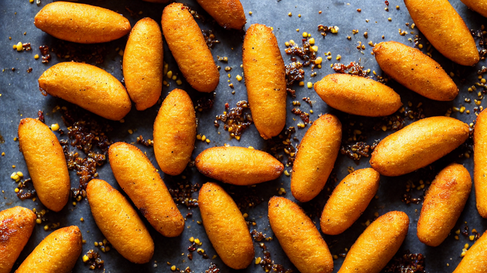
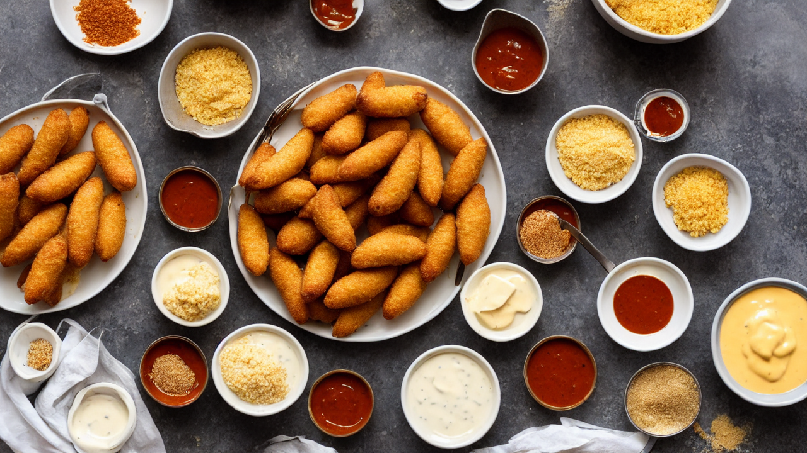
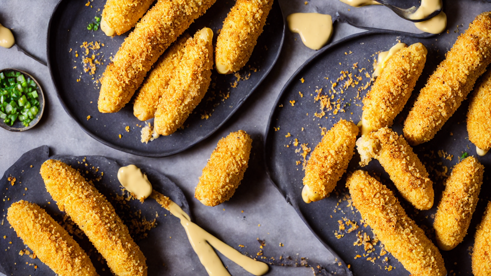
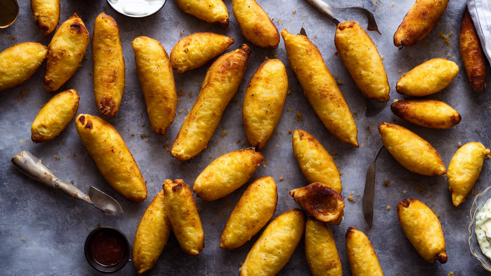
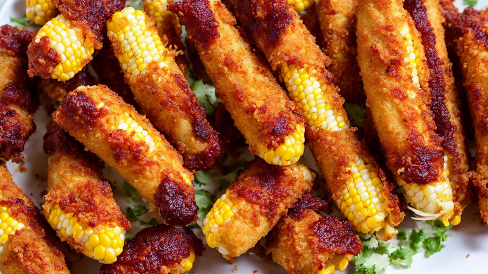
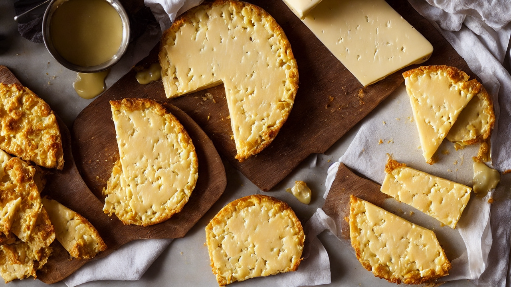
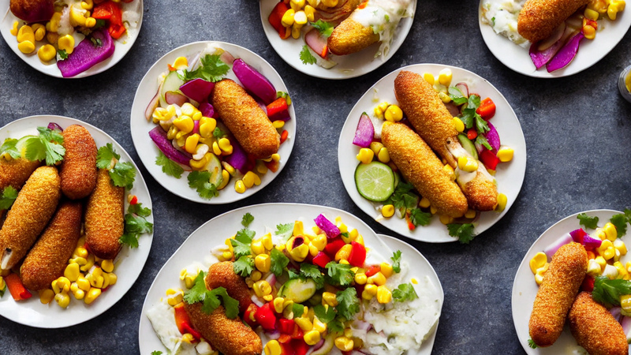
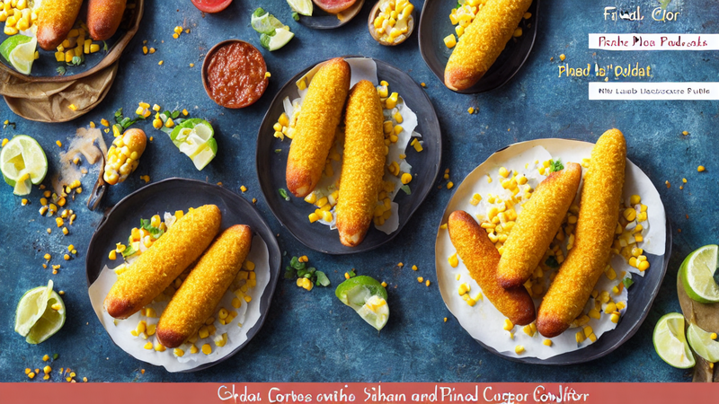

Korean Corn Dogs with Cheese Pull | Crunchy, Melty, and Addictive!
Discover how to make Korean Corn Dogs with Cheese Pull at home! This street-style snack combines crispy batter, gooey cheese, and bold flavors. Perfect for parties or late-night cravings! #KoreanFood #CheesePull
Ingredients
- corn dogs
- cheese sauce
- breadcrumbs
- Korean chili garlic sauce
- The cheese pull is the star of the show!
Instructions

This Korean Corn Dog is so good, you'll never order takeout again! Let's make these crispy, melty, and addictive bites together.

You'll need corn dogs, cheese sauce, breadcrumbs, and Korean chili garlic sauce. The cheese pull is the star of the show!

Heat oil in a deep fryer or pan. Dip corn dogs in cheese sauce, then coat with breadcrumbs for that irresistible crunch.

Fry until golden-brown and crispy! The cheese will melt and stretch like magic—watch it sizzle and bubble!

Remove from oil and let drain. Add Korean chili garlic sauce for flavor, then top with more cheese for that perfect pull!

Press the cheese down gently to create that stretchy, gooey pull. It's like a mini cheese log on a stick!

Serve immediately with extra sauce and a side of pickled vegetables. These are messy, delicious, and totally worth it!

Subscribe for more recipes like this! Let me know in the comments if you've made these—I'd love to see your creations!
Recommended Kitchen Essentials
Every great recipe starts with great tools. Here are our top picks to make cooking easier and more enjoyable:
Support Quick Bites Kitchen — When you purchase through our links, we may earn a small commission at no extra cost to you. This helps us keep creating free recipes for everyone. Thank you!